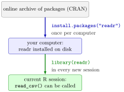

Packages¶
Definition¶
A package is a bundle of R functions, data sets and documentation that extends R. Using a package takes two steps:
- Install it once on your computer with
install.packages("name"), with the name in quotation marks. This downloads the package, by default from the Comprehensive R Archive Network (CRAN), R's central collection of packages. - Load it in every new R session with
library(name). This makes its functions available by their names.
Some packages come with R and need no installation: base, stats, utils and datasets among them. Most of them, such as base and stats, are loaded automatically at the start of every session. ls("package:base") lists the objects of the base package.
Interpretation¶
Installing and loading are different acts, like buying a book and taking it off the shelf. install.packages() puts the package on your disk and only has to be repeated for a new computer or a new version of R. library() opens it for the current session, so a script that uses a package must contain the library() line, normally at the top, otherwise it fails when run in a fresh session.

The figure shows the two stages for the readr package, which reads text data files such as comma-separated values (CSV) files. The left arrow is taken once per computer; the right arrow at the start of every session. Only after the second step does read_csv() exist as a name in the session (reading CSV files).
A large part of everyday R already sits in the packages that come with it: mean(), sum() and seq() belong to base, cor(), var() and quantile() to stats, head() and read.csv() to utils, and data sets such as trees to datasets. Later in the course the tidyverse packages add tibbles, step-by-step table operations and plots. Writing readr::read_csv() calls a function of an installed package without loading the whole package, which also makes clear where the function comes from.
Before writing your own function for a common task, check whether a well-tested one already exists in base R or in a package; it saves time and avoids errors.
The typical error is could not find function "read_csv": the package is installed but library(readr) was not run in this session, or it was run before R was restarted. The opposite error, there is no package called ..., means that library() was called for a package that has not been installed yet. Leave install.packages() out of scripts you share, or comment it out, so that the package is not downloaded again on every run.
Key Results¶
install.packages("readr")installs once per computer; the name is a string in quotation marks.library(readr)loads the package for the current session; the name can be written without quotation marks.- A function from a package that is installed but not loaded gives the error
could not find function. - base, stats, utils and datasets come with R and are loaded at start-up;
ls("package:base")lists the base functions. package::function()calls one function of an installed package withoutlibrary().
Examples¶
1. The usual pattern at the top of a script. The installation line is commented out after it has been run once.
# install once (remove the # and run this line a single time)
# install.packages("readr")
# load in every session that uses the package
library(readr)
wage_readr <- read_csv("wage_data.csv")
read_csv() returns a tibble, the tidyverse version of a data frame.
2. Pitfall: calling a function before loading its package. In a fresh session, without library(readr):
exists("read_csv")
#> [1] FALSE
read_csv("wage_data.csv")
#> Error in read_csv("wage_data.csv") : could not find function "read_csv"
After library(readr) the name exists, and the same call reads the file (if the file is in the working directory).
3. Which package does a function belong to? Functions that come with R live in different packages, all loaded at start-up.
"mean" %in% ls("package:base")
#> [1] TRUE
"cor" %in% ls("package:stats")
#> [1] TRUE
"cor" %in% ls("package:base")
#> [1] FALSE
"head" %in% ls("package:utils")
#> [1] TRUE
cor() is not part of base but of stats; you can call it anyway because stats is loaded automatically.
4. Data sets that come with R. The datasets package provides small data sets for practice, such as trees (diameter, height and volume of 31 felled black cherry trees) and USArrests (crime rates in the 50 US states).
Prerequisites¶
Related Concepts¶
Sources¶
- Programming for EOR · Week 2
- Lecture 2 script, Part 2 (Working with Data Frames, Built-in Functions, and Factors), section Packages
Aliases: R packages, package, install.packages(), install.packages, library(), library, loading a package, CRAN, base package Keywords: install.packages() once, library() every session, base, stats, utils, readr
Last updated: 10 November 2026 16:43
Packagesggplot2 and the Grammar of GraphicsTibbleFunction CallR and RStudioReading and Writing CSV FilesFunction Arguments and DefaultsSummary Statistics in R